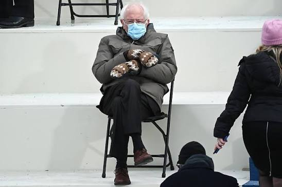

| Name | Zitat | ||
|---|---|---|---|
| Zohran | Mamdani |
So, Donald Trump, since I know you’re watching,
I have four words for you: Turn the volume up! I am Muslim. I am a democratic socialist. And most damning of all, I refuse to apologize for any of this. |
|
| Abdul | El-Sayed | Up until right about now, you might have noticed, I always say Inshallah or God willing, whenever the outcome of this race was mentioned. But today, tonight we turn that Insha'allah into an Alhamdulillah. | |
|
 |
Bernie | Sanders |
A nation will not survive morally or economically when so few have so much and so many have so little. |
| Luigi | Mangione |
Deny. Defend. Depose. |
|